About Us
Lovelines International Christian Fellowship is a faith-based humanitarian and counseling organization committed to caring for, restoring, and empowering vulnerable individuals and communities across the world.
We are deeply involved in supporting orphans, motherless children, the less privileged, the traumatized, the oppressed, victims of rape and abuse, prisoners, and other vulnerable groups. Through compassion-driven interventions, we work to restore dignity, hope, and purpose to lives affected by hardship and injustice.
With a presence in nearly two hundred countries, we collaborate with government authorities to promote peace, restore order, and bring stability to society.

WELCOME TO
LOVELINES INTERNATIONAL CHRISTIAN FELLOWSHIP
(LOVE IN PRACTICE)
Welcome to a place where compassion meets action, and faith becomes service.
At Lovelines International Christian Fellowship, we believe that love is not merely spoken — it is demonstrated.
Across Minnesota, USA, Nigeria and Globally, our mission is clear: To be a light in dark places, a voice for the unheard, and a helping hand to the forgotten.
- Support widows, orphans, and disadvantaged families
- Provide counseling and emotional healing
- Encourage spiritual growth and moral strength
- Promote dignity, unity, and sustainable hope
LOVE IN PRACTICE. COMPASSION IN ACTION. HOPE FOR ALL.
Our Vision
To see a world where vulnerable and traumatized individuals are restored, empowered, and dignified, societies are stabilized, and lives are transformed through Christ-centered love, counseling, and compassionate service.
Our Mission
To care for the vulnerable through humanitarian support, provide professional faith-centered counseling, equip church leaders with leadership wisdom, and collaborate with institutions to bring sanity and stability to society.
Our Key Services
Humanitarian & Relief
- Food and clothing distribution
- Emergency relief outreach
- Support for IDPs
Counseling Support
- Trauma and grief recovery
- Marriage and family guidance
- Addiction recovery support
Capacity Building
- Leadership wisdom for Pastors
- Educational sector mentoring
- Skill acquisition for youth
Advocacy
- Anti-drug abuse campaigns
- Campaigns against domestic violence
- Community peace-building
Our Leadership Team

Rev. Evang. Dr. Kingsley Dike
National President & Coordinator GeneralA distinguished Christian leader and humanitarian. He is the founder of Jesus Army Ministries and Life National President of Lovelines Nigeria.
Rev. Evangelist Dr. Kingsley Dike is a missionary and administrator with a deep passion for service. He received extensive ministerial training in Nigeria and the USA. In 2022, he single-handedly sponsored and registered Lovelines International Christian Fellowship Nigeria.
He is an alumnus of Trinity College of Ministerial Arts (TRICOMA) and has served as a visiting missionary to Assemblies of God, CPM, RCCG, and CAC. Beyond ministry, he is a human rights activist, journalist, author, and President of several NGOs including Global Family Worm-Free Initiative.

Dr. Felix Dike, FCA
Vice President & Int'l Director of ProgramsA seasoned Chartered Accountant and Chief Accountant at De Young Motors, blending professional excellence with spiritual depth.
Dr. Felix is a Fellow of the Institute of Chartered Accountants of Nigeria (ICAN). He brings high-level corporate financial experience to the fellowship, ensuring transparency and accountability in all humanitarian projects. He oversees the strategic development of international programs.

Prof. Chibuzor Thomason Chimezie
National Secretary & 2nd Vice PresidentA prophetic minister and spiritual leader of The Risen Christ Rhema Global Assembly, dedicated to apostolic leadership.
Prof. Chimezie serves as the administrative engine of the fellowship. His dual role as National Secretary and Vice President allows him to oversee organizational growth while providing deep spiritual guidance to the leadership team and members.

Rev. Dr. Tonia (BA, MCE, M.Ed)
Prophetic Teacher & CounselorA teacher by training and divine calling, specializing in healing hearts and supporting single parents and children.
With advanced degrees in education and Christian counseling, Dr. Tonia leads the fellowship's educational and emotional restoration initiatives. She is passionate about mentoring youth and providing trauma-informed counseling to the brokenhearted.

Rev. Dr. Mrs. Christiana Maimuna
International Women Affairs DirectorPresident of God's Assembly Bible Church, leading initiatives for the empowerment of women and care of widows.
Dr. Maimuna is a frontline advocate for women's rights within the church and society. She coordinates the fellowship's international widow support schemes and vocational training programs for less-privileged women.

Bishop Prof. Segun F. Sogbamu
National Director of Programs & EventsA theologian and academic professor, serving as the Proprietor of Kosem International School.
Professor Sogbamu combines academic excellence with ecclesiastical leadership. He is responsible for the planning and execution of all national conferences, seminars, and educational outreaches of the fellowship.

Apostle Amb. Mrs. Chinasaokwu C. Chimezie
Director of ProtocolA Computer Technology graduate managing official engagements and organizational protocol with excellence.
Apostle Chinasaokwu ensures that all international and national summits are conducted with the highest level of order. Her background in technology helps streamline the administrative and logistical operations of the fellowship.

Rev. Amb. (Mrs.) Salvation Esther Ngozi
Director of Prayers & Spiritual MattersMissionary Evangelist focused on intercessory leadership and women's spiritual empowerment.
Rev. Salvation leads the fellowship's global prayer network. She is a dedicated missionary traveler who focuses on spiritual revival and providing intercessory support for the leadership team and global chapters.

Pastor Mrs. Esther Mbakwe
Int'l Ambassador to Government & CorporateA certified medical practitioner and realtor fostering strategic partnerships for humanitarian impact.
Pastor Mbakwe serves as the bridge between the fellowship and external institutions. Her medical background aids in coordinating health outreaches, while her corporate experience helps in securing partnerships for social development.

Engr. Chimezie Joseph Chimeremeze
Director of Social and MediaMechanical Engineer and digital expert managing global media strategy and public engagement.
Engr. Chimezie is responsible for the digital footprint of Lovelines International. He manages all social platforms, media broadcasts, and technical requirements for international virtual missions and publicity.
Healing the Mind, Soul, and Society
Lovelines International Christian Fellowship is more than an organization; we are a beacon of hope. From supporting the vulnerable and the oppressed to equipping leaders and educators, our mission is to restore dignity through Christ-centered love and professional excellence.
Our Regional & Chapter Leaders
Serving communities across Nigeria and beyond.
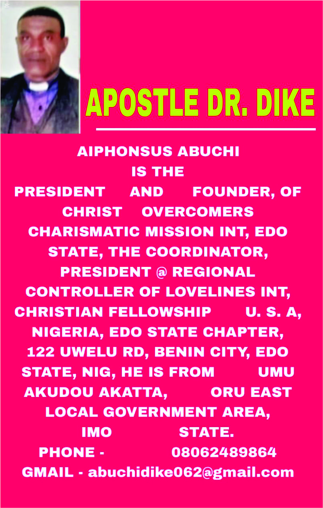
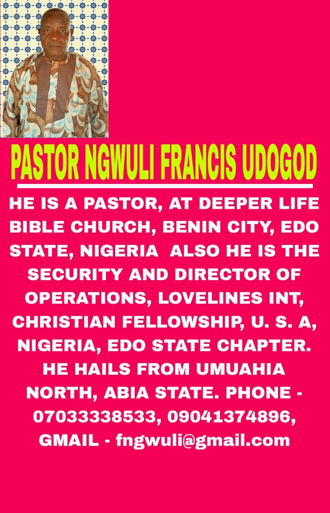
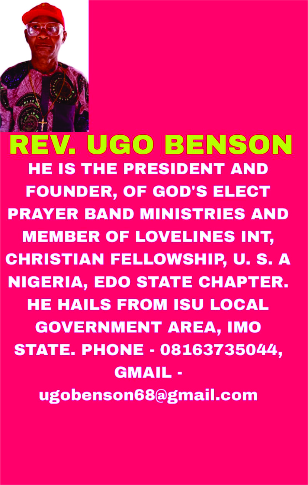
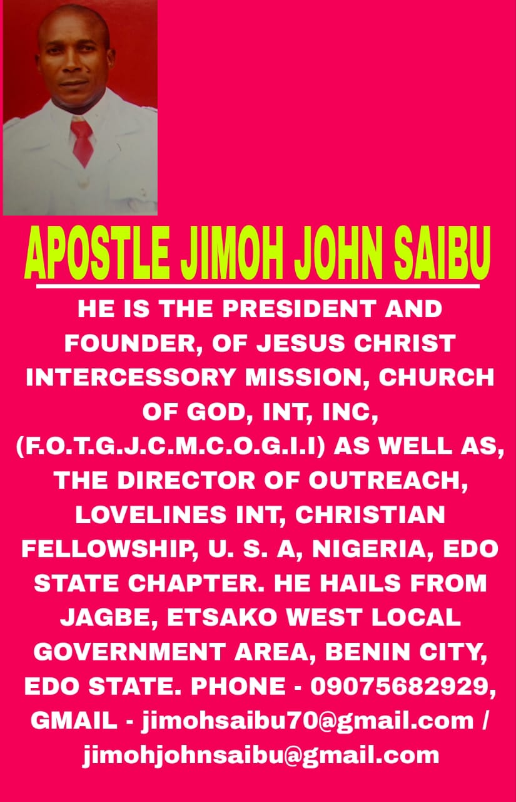
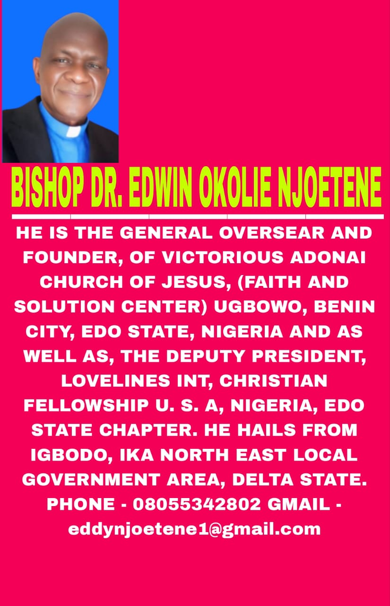
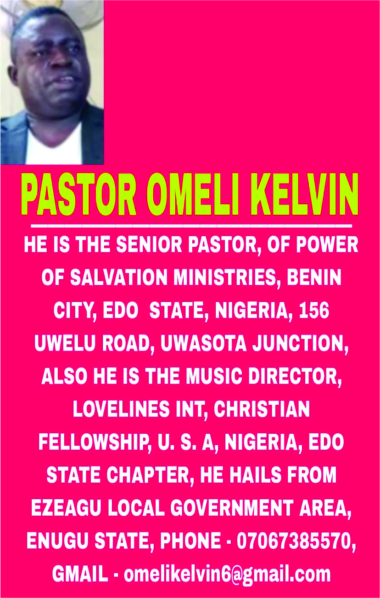
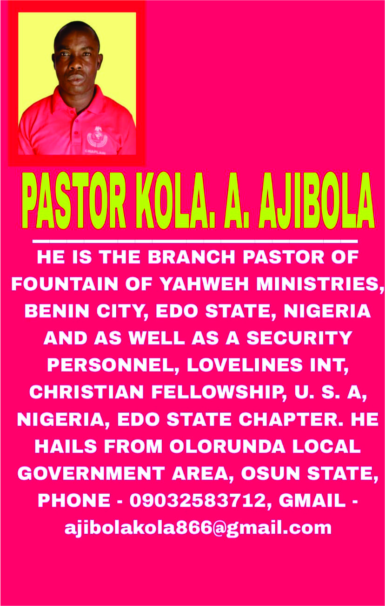
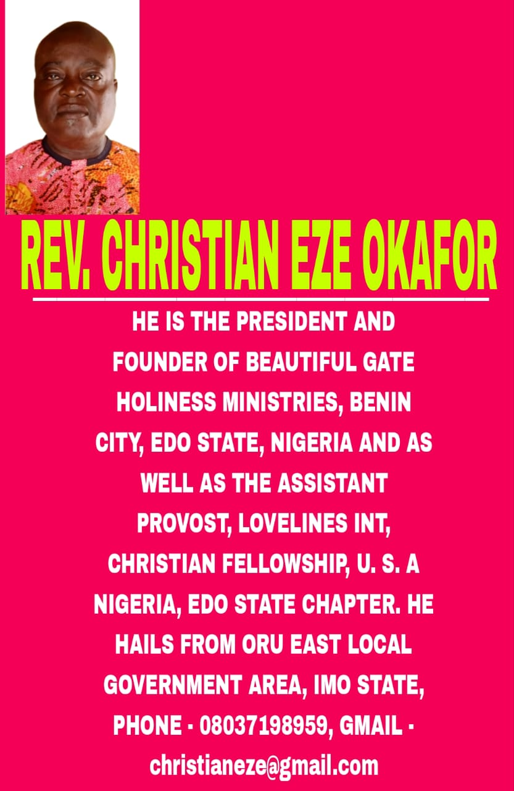
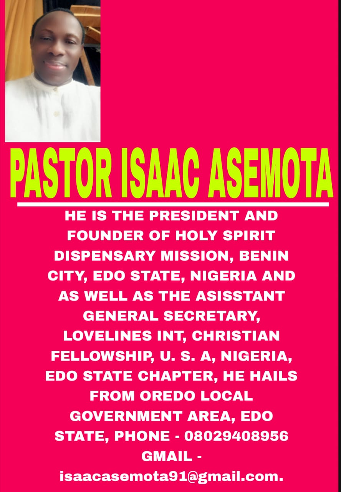
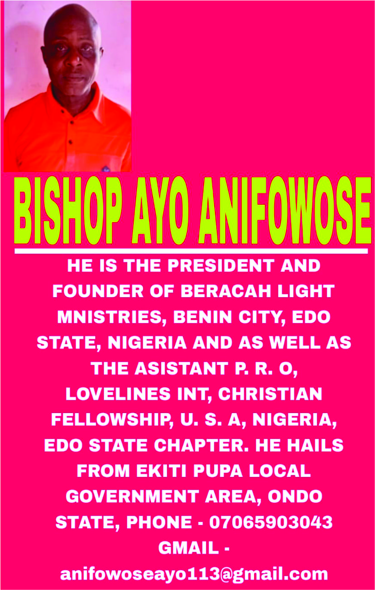
Legal & Regulatory Compliance
Lovelines International Christian Fellowship is a fully registered corporate body, committed to transparency and international best practices.
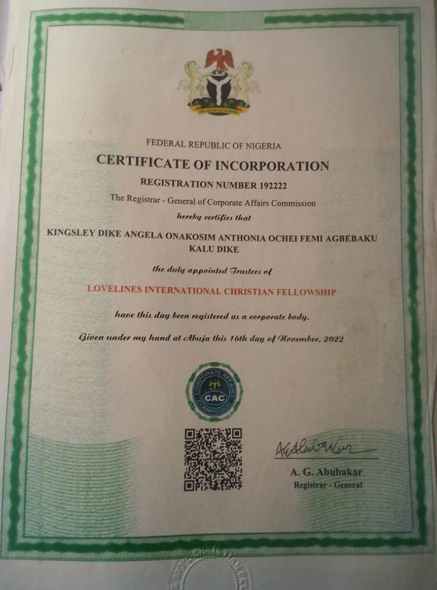
CAC Registered
RC Number: 192222
Incorporated Trustee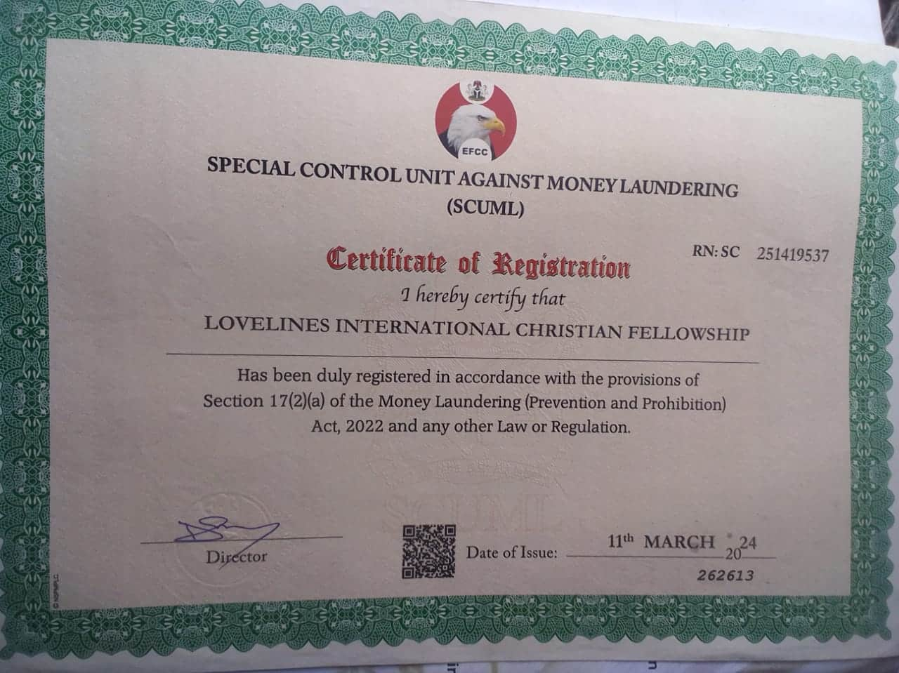
SCUML Certified
RN: SC 251419537
Anti-Money Laundering Compliant